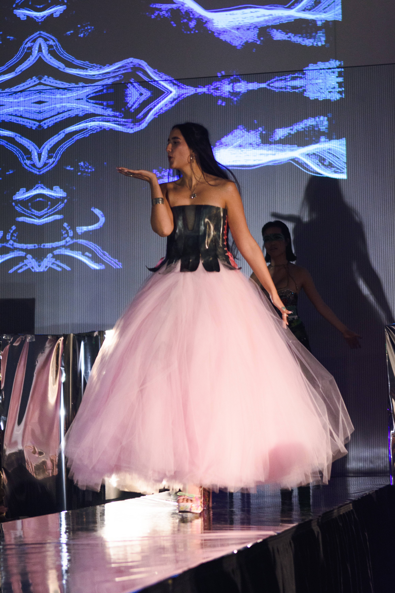
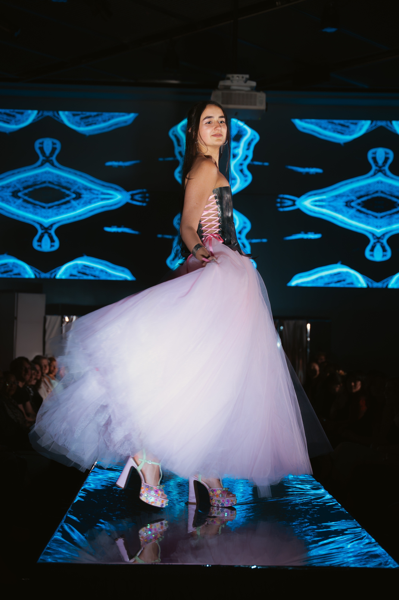
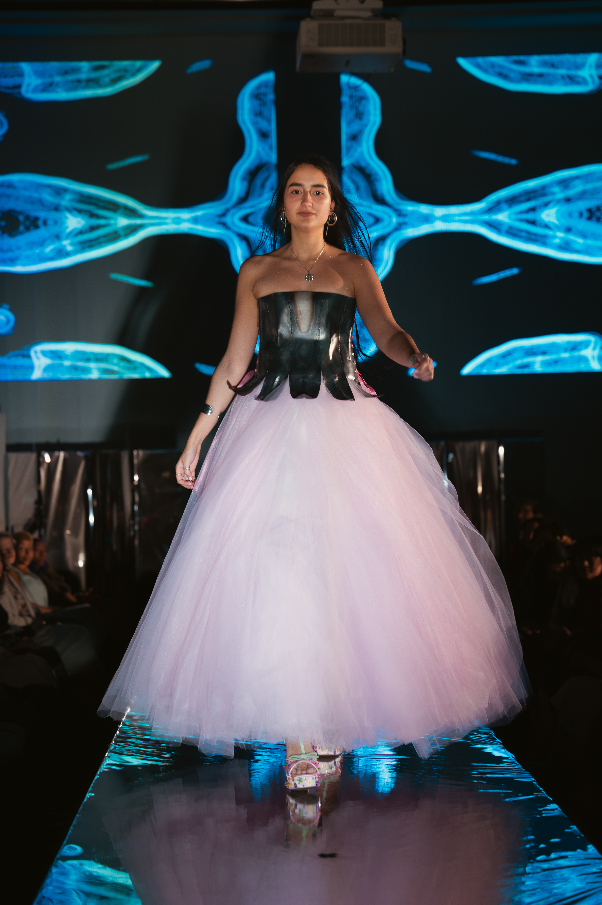
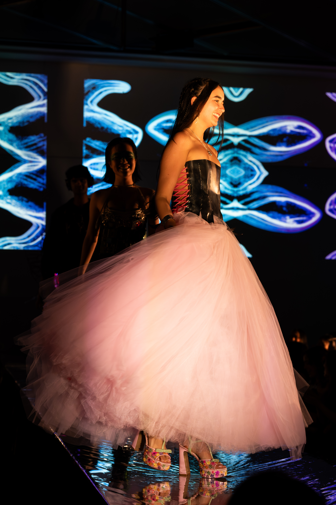

Ideation
Every May is the MIT Gala, a runway show displaying MIT student’s fashion abilities.
“I don’t know how to sew, but I know how to weld.”
I decided to weld and forge a corset to look like an upside down flower and learn how to sew a voluminous tulle skirt to continue the flower mirage on the bottom half.
Design
I created the pattern for the corset by cutting out panels from similar stiff material. I used cardboard and thick plastic to create three versions before settling on a design and converting that into a .dxf file for manufacturing.
Manufacturing
I laser cut my corset panels, TIG welded them together, forged petal details into them, and forged the shape to my torso. I decided to create two halves to the corset so I could lace them together from the sides. In total, this corset took me ~40 hours.
On the sewing side of things, I created a skirt pattern and sewed layer by layer starting from the base up. I finished with 18 total layers to achieve the volume I envisioned. I am extremely happy with the construction and final result, given this was my first sewing project.
Results
Ta-da! I could not be more proud of myself. I pushed myself outside of my comfort zone and tackled an ambitious project during the spring 2026 semester. I opened the MIT Gala and am highlighted in this magazine!



